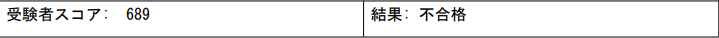
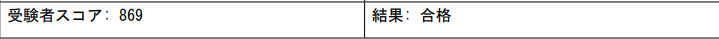
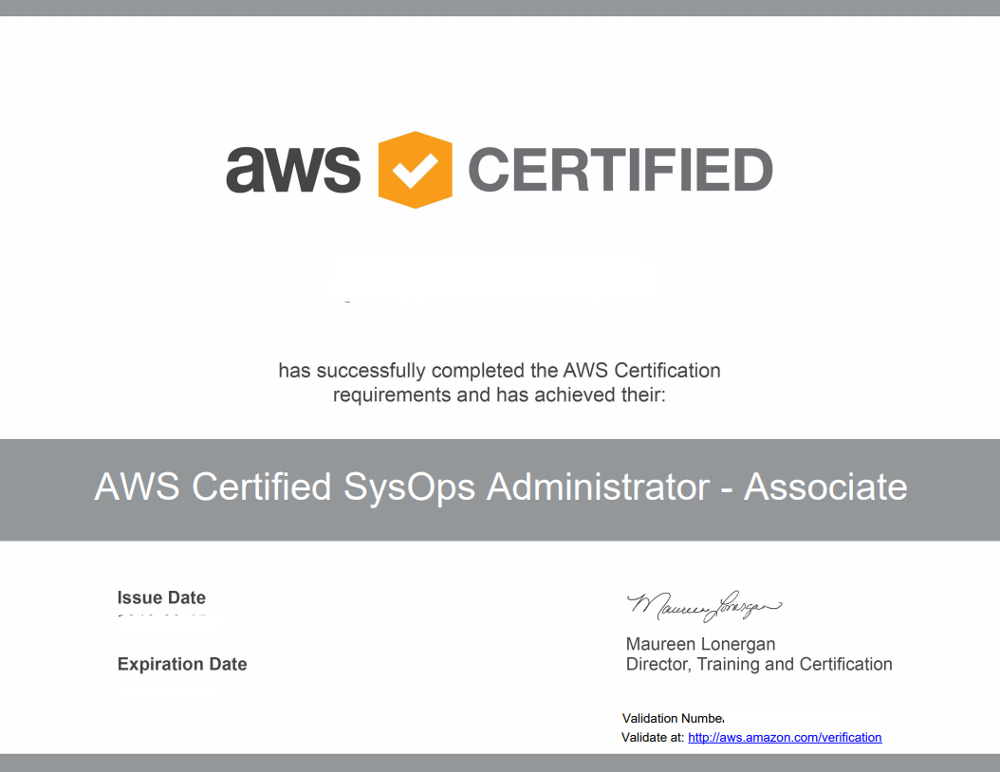

AWS SysOps Administrator Associate 試験 不合格&合格体験記
AWS 認定 SysOps アドミニストレーター – アソシエイトの不合格体験記、及び合格体験記です。失敗原因も書いて今後の反省材料にしたいと思います。もしこの記事を見る人があればこんなやつがいたんだな、と思い気を引き締めてください！！
前提
スキルレベル
SAA(AWS 認定ソリューションアーキテクト – アソシエイト)は2017年に取得済です。個人的にはAWSは主に検証環境用途で使っていますが、業務ではたまに使う程度です。がっつり開発経験とかはありません。
試験前提
2018年の秋頃に試験内容が改訂されましたが、当然改訂後の試験を受験しました。（2019年9月に受験）
改訂前の試験（旧試験）は、「SAA(AWS 認定ソリューションアーキテクト – アソシエイト)を合格していればsysopsも簡単」、「Associate 3試験（Solution Architect、sysops、devops）の中では一番sysopsが簡単だった」というネット情報がありますが、鵜呑みにしないでください。僕みたいに不合格になります。
合格時と不合格時の結果
不合格の時の試験レポート

合格の時の試験レポート


試験範囲について
まずは公式サイトを確認しましょう。
AWS 認定 SysOps アドミニストレーター – アソシエイト https://aws.amazon.com/jp/certification/certified-sysops-admin-associate/
認定によって検証される能力
- スケーラブルで、高可用性および高耐障害性を備えたシステムを AWS でデプロイ、管理、運用する
- AWS との間のデータフローを実装および制御する
- コンピューティング、データ、セキュリティ要件に基づく適切な AWS のサービスを選択する
- AWS 運用のベストプラクティスの適切な使用方法を識別する
- AWS の使用コストを予測し、運用コストコントロールメカニズムを識別する
- オンプレミスワークロードを AWS に移行する
推奨される知識
- AWS の信条 (クラウドのアーキテクチャの設計) に関する理解
- AWS CLI および SDK/API ツールの実践経験
- AWS に関連するネットワーク技術の理解
- セキュリティ概念の理解と、セキュリティコントロールとコンプライアンス要件の実装の実践経験
- 仮想化テクノロジーの理解
- システムのモニタリングおよび監査経験
- ネットワークの概念に関する知識 (DNS、TCP/IP、ファイアウォールなど)
- アーキテクチャの要件を解釈する能力
このページを見ても「で、何を勉強すればいいんや！」となるので、下記ページを見ましょう。一番まとまっています。（英語ですが、Google翻訳を使えばなんとかなります。）
一回不合格になった後に勉強方法を再度考える上で下記サイトを見つけました。
AWS Certified SysOps Administrator – Associate (SOA-C01) Exam Learning Path | Jayendra's Blog http://jayendrapatil.com/aws-certified-sysops-administrator-associate-soa-c01-exam-learning-path/
上記から個人的に大事なところを抽出したのが下記です。特に太字のところは重点的にやっていた方が良いと思います。
1.Monitoring & Management Tools
- CloudWatch
- AWS Config
- AWS Systems Manager
- Trusted Advisor
- Health Dashboard
- OpsWorks
- CloudFormation
- Beanstalk
- CloudTrail
2.Networking & Content Delivery
- VPC
- ELB
- CloudFront
- Route53
3.Compute
- EC2
- Auto Scaling
- Lambda
- API Gateway
4.Storage
- S3
- Glacier
- EBS
- Storage Gateway
- EFS
- Snowball
5.Databases
- RDS
- DynamoDB
- Aurora
- ElastiCache(Redis,Memcached)
6.Security
- IAM
- KMS
- 暗号化
- Inspector
- Shield
- WAF
- Artifact
7.Integration Tools
- SQS
- SNS
8.Cost management
- Organizations
- Consolidated billing
- billing Alert
とは言え、本当に満遍なく出題されるので上記のURLを参考に広く全般的に抑えていた方が良いです。1度目は受験に失敗しましたが、上記で言うところの細かいサービスの要点を抑えきれておらずに数％足りずに落ちました。
試験対策
参考にもならないレベルですが、基本的には1回目の受験は本当に適当でした。Blackbeltとよくある質問だけでいけるかな、と思っていました。
1回目の受験時
- blackbeltを読み込む（メジャーなところのみ。上記で言うところの太字サービス）
- よくある質問を眺める
- sysopsの模擬試験
ここまでやって冒頭の通り、「SAA(AWS 認定ソリューションアーキテクト – アソシエイト)を合格していればsysopsも簡単」、「Associate 3試験（Solution Architect、sysops、devops）の中では一番sysopsが簡単だった」というネットの評判を見て試験へ突撃。（撃沈）
2回目の受験時
2回目の受験の時は主要サービスだけの理解では合格的に達するのは厳しいと思ったので幅広く勉強しました。
- blackbeltを読み込む（基本的にすべて）
- よくある質問を眺める
- Udemy の模擬試験（2周）
- sysopsの模擬試験（2回目）
- 不安なところを実機を触って勉強する
ちなみに驚きだったのが、AWSの模擬試験を1ヶ月あけて再度受験したところ問題が変わっていました。ランダムで出題されるのか、もしくは模擬試験の入れ替えのタイミングだったのかは定かではありませんが、もしお金に余裕があるのであれば複数回受験しても良いかもしれません。
これから試験を受ける人へ向けて
- 油断せずにしっかり勉強しましょう。
- 幅広くサービスを理解しましょう
- 試験範囲は 公式サイト / Jayendra's Blog http://jayendrapatil.com/aws-certified-sysops-administrator-associate-soa-c01-exam-learning-path/ を確認しましょう
所感
正直、1回目の受験の時は試験に受かりさえすればいいや、というモチベーションでやっていました。あまり意味のない受験ですね。一度落ちたので、それからサービス触り始めて理解しようと努めることができたのである意味良かったと思います。
資格試験の範囲をすべて業務で使うことは現実的には少ないと思うので、そういうところを如何に重点的に効率的にやるかが大事ですね。（特にAWS試験の場合は）
あー、受かって良かった。次はdevopsかSAA Proを目指します！